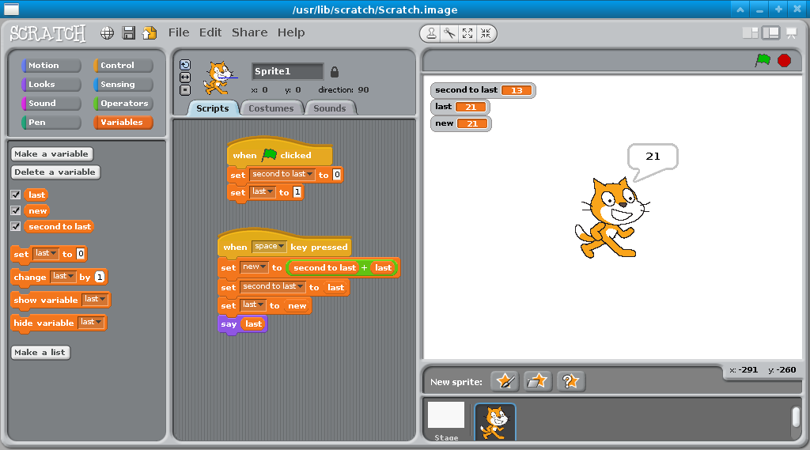

Does your script look something like this?
So, now we have a way to calculate the next number. But earlier we asked what would happen if you wanted the 100th number. Pushing space 100 times would take a while, and it'd be hard to keep count! Let's have the cat ask which number we want, and then tell us that one.
Do you remember the repeat block (under control) from earlier? We will use that, as well as a new block, called ask. You can find it in the light blue sensing tab. You can use it to have the cat ask a question, and the answer will be stored in answer, which is a special variable that is set by the ask block.
Your task: When the green flag is clicked, reset the "second to last" and "last" variables to 0 and 1. You probably still have this from a couple of steps ago! Then, have the cat ask which number in the sequence the user wants. Using answer, the repeat block, and some of the code you wrote before to calculate the next number, have the cat say the number that comes there in the sequence. For example, if the user types in "5", the cat should say 8, because the sequence goes "1 2 3 5 8"..